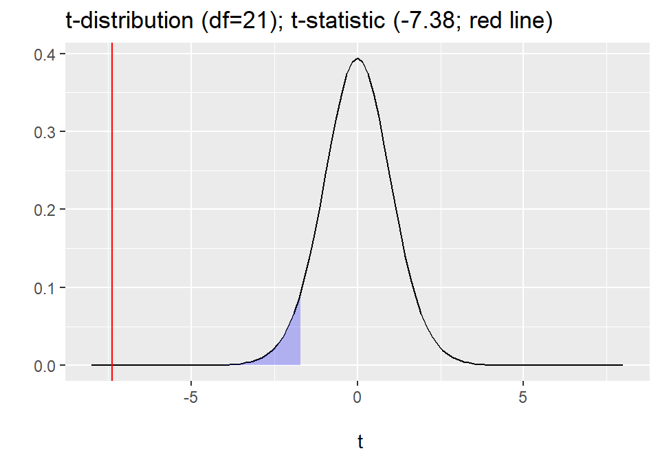

Lecture 17: Independent t-test
Data Analysis for Psychology in R 1
Tom Booth
Today
- Discuss in detail independent sample \(t\)-tests
- When to use
- Tested hypotheses
- Calculation
- Doing in R
- Write up
- \(t\)-test assumptions
Learning objectives
- Understand when to use an independent sample \(t\)-test
- Understand the null hypothesis for an independent sample \(t\)-test
- Understand how to calculate the test statistic
- Know how to conduct the test in R
- Understand the assumptions for \(t\)-tests
Purpose & Data
- The independent or Student’s \(t\)-test is used when we want to test the difference in mean between two measured groups.
- The groups must be independent:
- No person can be in both groups.
- Examples:
- Treatment versus control group in an experimental study.
- Married versus not married
- Data Requirements
- A continuously measured variable.
- A binary variable denoting groups
Hypotheses
- Identical to one-sample, only now we are comparing two measured groups.
- Two-tailed:
\[
\begin{matrix}
H_0: \mu_1 = \mu_2 \\
H_1: \mu_1 \neq \mu_2
\end{matrix}
\]
\[
\begin{matrix}
H_0: \mu_1 = \mu_2 \\
H_1: \mu_1 < \mu_2 \\
H_1: \mu_1 > \mu_2
\end{matrix}
\]
Example
- Example taken from Howell, D.C. (2010). Statistical Methods for Psychology, 7th Edition. Belmont, CA: Wadsworth Cengage Learning.
- Data from Aronson, Lustina , Good, Keough , Steele and Brown (1998). Experiment on stereotype threat.
- Two independent groups college students (n=12 control; n=11 threat condition).
- Both samples excel in maths.
- Threat group told certain students usually do better in the test
Data
|
Group
|
Score
|
|
Threat
|
7
|
|
Threat
|
5
|
|
Threat
|
6
|
|
Threat
|
5
|
|
Control
|
10
|
|
Control
|
11
|
|
Control
|
8
|
|
Control
|
9
|
Visualizing data
- We spoke earlier in the course about the importance of visualizing our data.
- Here, we want to show the mean and distribution of scores by group.
- So we want a…..
Hypotheses
- My hypothesis is that the threat group will perform worse than the control group.
- This is a one-tailed, or directional hypothesis.
- And I will use an alpha = .05
t-statistic
\[
t = \frac{\bar{x}_1 - \bar{x}_2}{SE(\bar{x}_1 - \bar{x}_2)}
\]
- Where
- \(\bar{x}_1\) and \(\bar{x}_2\) are the sample means in each group
- \(SE(\bar{x}_1 - \bar{x}_2)\) is standard error of the difference
- Sampling distribution is a \(t\)-distribution with \(n-2\) degrees of freedom.
Standard Error Difference
- First calculate the pooled standard deviation.
\[
S_p = \sqrt\frac{(n_1 - 1)s_1^2 + (n_2 - 1)s_2^2}{n_1 + n_2 - 2}
\]
- Then use this to calculate the SE of the difference.
\[
SE(\bar{x}_1 - \bar{x}_2) = S_p \sqrt{\frac{1}{n_1} + \frac{1}{n_2}}
\]
Calculation
- Steps in my calculations:
- Calculate the sample mean in both groups.
- Calculate the pooled SD.
- Check I know my n.
- Calculate the standard error.
- Use all this to calculate \(t\).
Calculation
# A tibble: 2 x 4
Group Mean SD N
<fct> <dbl> <dbl> <int>
1 Threat 5.27 1.27 11
2 Control 9.58 1.51 12
Calculation
# A tibble: 2 x 4
Group Mean SD N
<fct> <dbl> <dbl> <int>
1 Threat 5.27 1.27 11
2 Control 9.58 1.51 12
- Calculate pooled standard deviation
\[
S_p = \sqrt\frac{(n_1 - 1)s_1^2 + n_2 - 1)s_2^2}{n_1 + n_2 - 2} = \sqrt{\frac{10*1.27 + 11*1.51}{11+12-2}} = \sqrt{\frac{29.31}{21}} = 1.396
\]
Calculation
- Calculate pooled standard deviation
\[
S_p = \sqrt\frac{(n_1 - 1)s_1^2 + n_2 - 1)s_2^2}{n_1 + n_2 - 2} = \sqrt{\frac{10*1.27 + 11*1.51}{11+12-2}} = \sqrt{\frac{29.31}{21}} = 1.396
\]
- Calculate the standard error.
\[
SE(\bar{x}_1 - \bar{x}_2) = S_p \sqrt{\frac{1}{n_1} + \frac{1}{n_2}} = 1.396\sqrt{\frac{1}{11}+\frac{1}{12}} = 1.396*0.417 = 0.583
\]
Calculation
- Use all this to calculate \(t\).
\[
t = \frac{\bar{x}_1 - \bar{x}_2}{SE(\bar{x}_1 - \bar{x}_2)} = \frac{5.27-9.58}{0.583} = -7.39
\]
- Note: There is a small amount of rounding error when we compare to \(t\) calculated in R.
Is my test significant?
- Steps:
- Calculate my degrees of freedom \(n-2 = 23-2 = 21\)
- Check my value of \(t\) against the \(t\)-distribution with the appropriate df and make my decision
Is our test significant?

Is my test significant?
- So our critical value is -1.72
- Our t-statistic is larger than this, -7.38.
- So we reject the null hypothesis.
- \(t\)(21)= -7.38, \(p\) <.05, one-tailed.
In R
Two Sample t-test
data: Score by Group
t = -7.3817, df = 21, p-value = 1.458e-07
alternative hypothesis: true difference in means is less than 0
95 percent confidence interval:
-Inf -3.305768
sample estimates:
mean in group Threat mean in group Control
5.272727 9.583333
Write up
An independent sample \(t\)-test was used to assess whether the maths score mean of the control group (12) was higher than that of the stereotype threat group (11). There was a significant difference in test score between the control (Mean=9.58; SD=1.51) and threat (Mean=5.27; SD=1.27) groups (\(t\)(21)=-7.38, \(p\)< .05, one-tailed). Therefore, we reject the null hypothesis. The direction of effect supports our directional hypothesis and indicates that the threat group performed more poorly than the control group.
Assumptions
- The independent sample \(t\)-test has the following assumptions:
- Independence of observations within and across groups.
- Continuous variable is approximately normally distribution within both groups.
- Equivalently, that the difference in means is normally distributed.
- Homogeneity of variance across groups.
Assumption checks summary
|
|
Description
|
One-Sample t-test
|
Independent Sample t-test
|
Paired Sample t-test
|
|
Normality
|
Continuous variable (and difference) is normally distributed.
|
Yes (Population)
|
Yes (Both groups/ Difference)
|
Yes (Both groups/ Difference)
|
|
Tests:
|
Descriptive Statistics; Shapiro-Wilks Test; QQ-plot
|
|
|
|
|
Independence
|
Observations are sampled independently.
|
Yes
|
Yes (within and across groups)
|
Yes (within groups)
|
|
Tests:
|
None. Design issue.
|
|
|
|
|
Homogeneity of variance
|
Population level standard deviation is the same in both groups.
|
NA
|
Yes
|
Yes
|
|
Tests:
|
F-test
|
|
|
|
|
Matched Pairs in data
|
For paired sample, each observation must have matched pair.
|
NA
|
NA
|
Yes
|
|
Tests:
|
None. Data structure issue.
|
|
|
|
Assumption checks: Normality
- Descriptive statistics:
- Skew: No strict cuts for skew.
- Skew < |1| generally not problematic
- |1| < skew > |2| slight concern
- Skew > |2| investigate impact
Assumption checks: Normality
- QQ-plots:
- Plots the sorted quantiles of one data set (distribution) against sorted quantiles of data set (distribution).
- Quantile = the percent of points falling below a given value.
- For a normality check, we can compare our own data to data drawn from a normal distribution
Assumption checks: Normality
- Shapiro-Wilks test:
- Checks properties of the observed data against properties we would expected from normally distributed data.
- Statistical test of normality.
- \(H_0\): data = a normal distribution.
- \(p\)-value \(< \alpha\) = reject the null, data are not normal.
- Sensitive to N as all p-values will be.
- In very large N, normality should also be checked with QQ-plots alongside statistical test.
Assumption checks: Homogeneity of variance
- Levene’s test:
- Statistical test for the equality (or homogeneity) of variances across groups (2+).
- Test statistic is essentially a ratio of variance estimates calculated based on group means versus grand mean.
- The \(F\)-test is a related test that compares the variances of two groups.
- This test is preferable for \(t\)-test.
- \(H_0\): Population variances are equal.
- \(p\)-value \(< \alpha\) = reject the null, the variances differ across groups.
Violation of homogeneity of variance
- If the variances differ, we can use a Welch test.
- Conceptually very similar, but we do not use a pooled standard deviation.
- As such our estimate of the SE of the difference changes
- As do our degrees of freedom
Welch test
- If the variances differ, we can use a Welch test.
- Test statistic = same
- SE calculation:
\[
SE(\bar{x}_1 - \bar{x}_2) = \sqrt{\frac{s_1^2}{n_1} + \frac{s_2^2}{n_2}}
\]
- And degrees of freedom (don’t worry, not tested)
\[
df = \frac{(\frac{s_1^2}{n_1} + \frac{s_2^2}{n_2})^2}{\frac{(\frac{s_1^2}{n_1})^2}{n_1 -1} + \frac{(\frac{s_2^2}{n_2})^2}{n_2 -1}}
\]
Tasks for this week…
- Finish tasks from last week.
- Quiz 17: One-sample \(t\)-tests
- Today at 17:00.
- Close Monday 3rd at 17:00